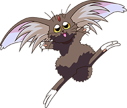
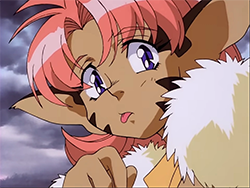
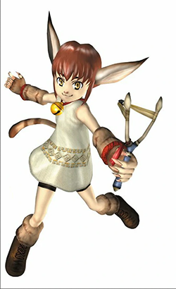
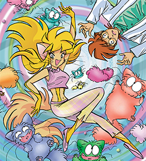
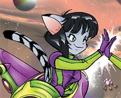
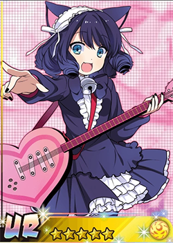
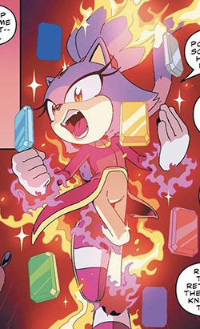
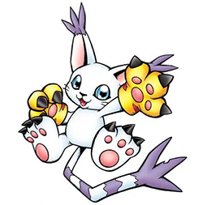
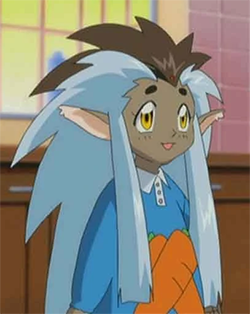
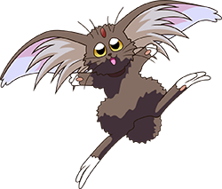

Hi! welcome to the
CATGIRL SHRINE
This is my little tribute to the kitty cat characters that I just can't get enough of. When I was very young I found a site dedicated to catgirls across media (mostly anime) and it changed my life. Shout out to catgirls. Gotta be one of my favorite genders. I love cat people, cat furries, little cat things... and I like girls. Not even usually in a gay way, I just think they're neat. These aren't necessarily characters I have very deep understanding of or much familiarity with, I just really like their vibes.
Vision of Escaflowne
I only ever watched like one or two episodes of this show. Yes this is the character I took my name from. I spent I don't know how long looking up pictures of her as a kid. I was obsessed with her. She defined a lot of my taste in character design. I know jack shit about her but she still holds a special place in my heart. Thank you, Merle Escaflowne.
Dark Cloud
My brother and I played so much Dark Cloud together when we were kids, and I immediately latched onto Xiao. I had never considered long ears on a catgirl before and I was immediately hooked. I redesigned OCs because of her. I also was drawn to narratives about cats turning into catgirls. I loved cats, I loved cat people, it was the best of both worlds.
Outlaw Star
I've watched even less Outlaw Star than Vision of Escaflowne. Sorry. Maybe I'll get around to it. Is it even good? Anyway, I think she's hot. Not because she's a catgirl but because she's just my type. Feisty, badass, ultra strong babe who turns into a giant beast? Fuck yeah. I don't have much to say about her other than this was another character I liked looking at on google as a kid. I wasn't capable of being attracted to her that way back then, but it might have planted a seed. Who knows
Reality Check
Reality Check was one of my favorite comics as a kid. It's a wild, quirky graphic novel about a guy named Collin who plays what is essentially a 90s sci fi version of VRChat, and the crazy hijinks that ensue when his cat accidentally enters the game by sleeping under his helmet. She's flighty, curious, energetic, colorful, and fun, and leads Collin on wacky adventures in the VR world. It's a very silly story. Fun fact, one of the co-creators voiced Gir, and his sense of humor is very apparent throughout the comic. Reality Check was first published in 1995, and it shows. I personally think the old VFX have a lot of charm, but I might be biased.
Reality Check
Mimi is Catreece's littermate, who lives with a famous hacker, and was introduced in volume 2 of Reality Check. She's snarky and likes to tease Catreece, and they have a pretty fierce sibling rivalry. I loved Mimi, maybe more than Catreece? Can't quite remember but I thought she was really cute and cool.
Sonic the Hedgehog: The Movie
The Sonic OVA is one of my favorite sonic media, and will always be the OG sonic movie to me. I haven't seen it since I was a kid, and I remember the dub being wack, but in a charming way. Iirc, Sara is incredibly annoying but I still liked her a lot. Something about pink and catgirls, man.
Tokyo Mew Mew
I have not seen any of the Tokyo Mew Mew anime (yet, currently trying to remedy that) but I did read a little bit of the first issue of the manga while hanging out in a Barnes and Noble as a kid. I don't remember anything about it, but I did like Ichigo's design and the manga's visual style. I'm pretty sure this was after my gazing at catgirls on google phase so I don't have super strong feelings about her, but boy is she the catgirl of all time. Pink hair and cute pink dress, black ears and tail, bows and jingle bells everywhere. Peak catgirl design. I probably would have latched onto this one hard at the height of my catgirl years.
Show by Rock!
I stumbled on Show by Rock! in college after seeing a video of Gary Busey dancing in front of the ending theme on my tumblr dash and I had to see more. I saw a few episodes and pretty quickly fell off it. Are you seeing the pattern? I don't actually watch much anime. By the time I was old enough to find and watch the anime I was interested in I was kinda over it. But I still love an iconic anime catgirl. Love her whole look, can't go wrong with pink and black. Yet another missed obsession for kid me. Sorry kid.
Sonic the Hedgehog
This is a more recent one, but Sonic and I go way back. Rouge is my favorite Sonic character but she doesn't exactly fit here and I really dig Blaze. I've never played any of the games she's in, but I read the IDW series and she's good. Hope to see more of her as the series goes on.
Digimon
Not a catgirl, not even technically female, but I don't care. Gatomon is a little cat thing and I say it belongs here. I love Gatomon so much. Digimon like, replaced Pokemon in our household during most of the adventure 1 series. Digimon's art style overall really appealed to me, but I absolutely loved Gatomon's design. The big tufted ears, super long tufted tail, big clawed gloves... mwah. Chef's kiss.
Klonoa 2: Lunatea's Veil
Yet another little cat thing, I know. Klonoa 2 was an important game for me, and I really dug a lot of the character designs in the game. But I was very taken with Tat. I remember drawing fan art of her, which I only did for my very favorite things.
Tenchi Muyo
Ok hear me out, I know ryo-ohki isn't really a cat, but she's a cabbit who turns into a girl and that's good enough for me. I watched like one Tenchi Muyo tape a bunch of times and wound up creating an OC based entirely on her. I loved Ryo-Ohki. I still love Ryo-Ohki, though I way prefer her cabbit form these days. Too fuckin cute. Look at this thing. Adorable. A perfect creature.

Merle
Vision of Escaflowne
I only ever watched like one or two episodes of this show. Yes this is the character I took my name from. I spent I don't know how long looking up pictures of her as a kid. I was obsessed with her. She defined a lot of my taste in character design. I know jack shit about her but she still holds a special place in my heart. Thank you, Merle Escaflowne.
Xiao
Dark Cloud
My brother and I played so much Dark Cloud together when we were kids, and I immediately latched onto Xiao. I had never considered long ears on a catgirl before and I was immediately hooked. I redesigned OCs because of her. I also was drawn to narratives about cats turning into catgirls. I loved cats, I loved cat people, it was the best of both worlds.
Aisha Clan-Clan
Outlaw Star
I've watched even less Outlaw Star than Vision of Escaflowne. Sorry. Maybe I'll get around to it. Is it even good? Anyway, I think she's hot. Not because she's a catgirl but because she's just my type. Feisty, badass, ultra strong babe who turns into a giant beast? Fuck yeah. I don't have much to say about her other than this was another character I liked looking at on google as a kid. I wasn't capable of being attracted to her that way back then, but it might have planted a seed. Who knows
Catreece
Reality Check
Reality Check was one of my favorite comics as a kid. It's a wild, quirky graphic novel about a guy named Collin who plays what is essentially a 90s sci fi version of VRChat, and the crazy hijinks that ensue when his cat accidentally enters the game by sleeping under his helmet. She's flighty, curious, energetic, colorful, and fun, and leads Collin on wacky adventures in the VR world. It's a very silly story. Fun fact, one of the co-creators voiced Gir, and his sense of humor is very apparent throughout the comic. Reality Check was first published in 1995, and it shows. I personally think the old VFX have a lot of charm, but I might be biased.
You can go read the newer colorized version online at the official site here!
Mimi
Reality Check
Mimi is Catreece's littermate, who lives with a famous hacker, and was introduced in volume 2 of Reality Check. She's snarky and likes to tease Catreece, and they have a pretty fierce sibling rivalry. I loved Mimi, maybe more than Catreece? Can't quite remember but I thought she was really cute and cool.
Sara
Sonic the Hedgehog: The Movie
The Sonic OVA is one of my favorite sonic media, and will always be the OG sonic movie to me. I haven't seen it since I was a kid, and I remember the dub being wack, but in a charming way. Iirc, Sara is incredibly annoying but I still liked her a lot. Something about pink and catgirls, man.
Ichigo
Tokyo Mew Mew
I have not seen any of the Tokyo Mew Mew anime (yet, currently trying to remedy that) but I did read a little bit of the first issue of the manga while hanging out in a Barnes and Noble as a kid. I don't remember anything about it, but I did like Ichigo's design and the manga's visual style. I'm pretty sure this was after my gazing at catgirls on google phase so I don't have super strong feelings about her, but boy is she the catgirl of all time. Pink hair and cute pink dress, black ears and tail, bows and jingle bells everywhere. Peak catgirl design. I probably would have latched onto this one hard at the height of my catgirl years.
Cyan
Show by Rock!
I stumbled on Show by Rock! in college after seeing a video of Gary Busey dancing in front of the ending theme on my tumblr dash and I had to see more. I saw a few episodes and pretty quickly fell off it. Are you seeing the pattern? I don't actually watch much anime. By the time I was old enough to find and watch the anime I was interested in I was kinda over it. But I still love an iconic anime catgirl. Love her whole look, can't go wrong with pink and black. Yet another missed obsession for kid me. Sorry kid.
Blaze the Cat
Sonic the Hedgehog
This is a more recent one, but Sonic and I go way back. Rouge is my favorite Sonic character but she doesn't exactly fit here and I really dig Blaze. I've never played any of the games she's in, but I read the IDW series and she's good. Hope to see more of her as the series goes on.
Gatomon
Digimon
Not a catgirl, not even technically female, but I don't care. Gatomon is a little cat thing and I say it belongs here. I love Gatomon so much. Digimon like, replaced Pokemon in our household during most of the adventure 1 series. Digimon's art style overall really appealed to me, but I absolutely loved Gatomon's design. The big tufted ears, super long tufted tail, big clawed gloves... mwah. Chef's kiss.
Tat
Klonoa 2: Lunatea's Veil
Yet another little cat thing, I know. Klonoa 2 was an important game for me, and I really dug a lot of the character designs in the game. But I was very taken with Tat. I remember drawing fan art of her, which I only did for my very favorite things.
Ryo-Ohki
Tenchi Muyo
Ok hear me out, I know ryo-ohki isn't really a cat, but she's a cabbit who turns into a girl and that's good enough for me. I watched like one Tenchi Muyo tape a bunch of times and wound up creating an OC based entirely on her. I loved Ryo-Ohki. I still love Ryo-Ohki, though I way prefer her cabbit form these days. Too fuckin cute. Look at this thing. Adorable. A perfect creature.
